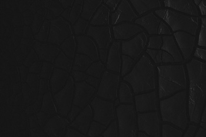
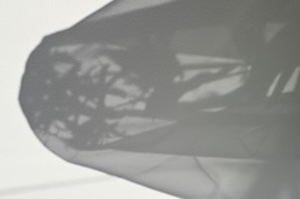
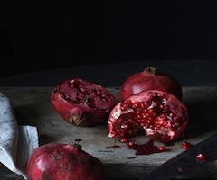
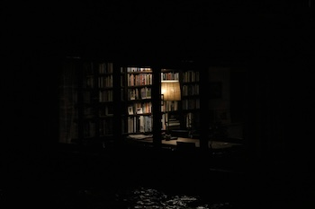

Constellations are known as mysterious beings in the ORV world, being the spectators of the tragedies occurring in the universe the scenario is happening. Constellations can offer to become a sponsor for an incarnation, which means they'll be able to share coins, skills, or power if the incarnation chooses them during the selection periods. Although having some support can be helpful in their apocalyptic world, there are some constellations that might try to use the incarnations for their own power/enjoyment with little care of what the people the sponsor want, so it's best to consider your options before making a decision. Speaking of the selection process, none of the constellations go by their real names when interacting with the incarnations, instead going by a modifier, which can make it hard to tell who they might be/their intentions if you don't have a lot of knowledge regarding history or if you didn't read the original novel like Kim Dokja.
Most of the time, constellations aren't able to manifest directly into the scenarios, usually lending items and support through the Dokkaebis' channels, unless they use a large portion of probability as a sacrifice for their presence. While some constellations come from different mythologies and stories from the past, there is always a chance an incarnation can become a constellation if they have enough stories (feats) and are recognized by the Star Stream, which can sometimes be hard if you are being sponsored by another constellation. Kim Dokja, relying on this fact, refused to take on a constellation sponsor, and became a constellation himself after the 10th scenario. There are even groups of constellations, mostly made up of constellations of the same mythology, called nebulas, with incarnations being able to form their own if they have support from at least 5 other constellations and enough coins. Kim Dokja also uses this to form his own nebula called Kim Dokja Company, so as not to be under the thumb of another constellation/nebula. Down below are some of the constellations that pop up the most in the story.
Information taken from original source material &
the ORV wiki.
Balancing/Judgement Scales
[Demon-Like Judge of Fire]
The Demon-Like Judge of Fire, also known as Uriel, is a constellation part of the Eden Nebula and one of the first to follow Kim Dokja on his journey through the scenarios. Uriel is someone who cares very deeply for others and always encourages Dokja to enact justice on those who are horrible people. She has chosen to sponsor Jung Heewon, as they both have similar morals and a sense of justice that drives them to protect those they hold dear. The power she gives Heewon is based on the evil in another person, with majority of the Eden constellations powering it have to agree for goodness to strike down upon it.
Golden Cell
[Prisoner of the Golden Headband]
The Prisoner of the Golden Headband, or The Great Sage/Sun Wukong, is a prominent figure in Chinese mythology is another constellation that followed Dokja from the start of his journey. This constellation usually speaks in an easy going tone, but is often shown to be annoyed by troublesome things that show up, usually having to do with Dokja and the situations he finds himself in because of other people. The Great Sage is very fond of Dokja in a brotherly way, although he wants Dokja to handle things on his own if he thinks he can handle it.

Black Dragon Scales
[Abyssal Black Flame Dragon]
Abyssal Black Flame Dragon (ABFD) does not have a given name in the novel, but is another one of Dokja's supporters, choosing to sponsor Han Sooyoung in later scenarios. While 1000s of years old, ABFD's mental state is similar to a 15-year-old's, and he is often described to act like a chuunibyou (someone with an edgy or delusional persona). ABFD is often the one cheering for fights to occur, often getting bored when there isn't any drama to keep him entertained. At the beginning of the story, it shows ABFD is the leader of the Black Cloud nebula and part of the Absolute Evil group, as opposed to Uriel who is in the Absolute Good group.

Veil Silhouette
[Secretive Plotter]
Not much is known about this constellation when he first appears in the story by the readers or Kim Dokja, who assumes he is unimportant to explain why he wasn't mentioned in the original novel. Over the course of the novel, it is slowly revealed that the identity of this constellation/Outer God is a different timeline of Yoo Joonghyuk born from one of his previous regressions and with more memories than the one we follow on Dokja's journey. Worn down by the multiple regressions he had to go down, Yoo Joonghyuk split himself into two, with the current timeline's version of him choosing to keep going with only limited memories. Secretive Plotter actually ends up being jealous of the happiness this timeline's Yoo Joonghyuk was able to achieve, causing some animosity between them.

Pomegranate
[Queen of the Darkest Spring]
Queen of the Darkest Spring refers to Persephone from Greek mythology, who is a part of the Olympus nebula, queen of the Underworld nebula, and married to Hades. Dokja encounters Persephone while on a trip to the Underworld to revive one of his friends and fufill a promise he had made, endearing himself to her. Persephone may not have been one of his supporters from the very beginning, but she and Hades stepped in to become parental figures to Dokja and support him on his journey. During most of the times she shows herself/meets with Dokja, she is described to be taking on other people's appearances, mostly to tease Dokja, and not showing her true self until later on.

Library
[The Oldest Dream]
The Oldest Dream is the most important constellation/diety in the ORV universe because he is the cause of this whole apocalypse occuring in the first place. The Oldest Dream is revealed at the end to be a 15-year-old Kim Dokja, from a time when he lost all hope and was saved by TWAS, which helped him to move on in his life, a fact not even the current Kim Dokja had known about. To keep the world moving forward, someone must take on the role of being the Oldest Dream to essentially dream about the world and allow it to continue, leading to the current Dokja's sacrifice so that the younger version of himself could have a happier in another universe and his companions would be able to live their lives.